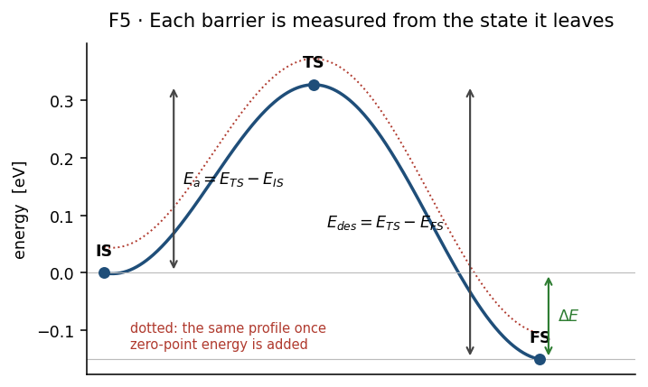
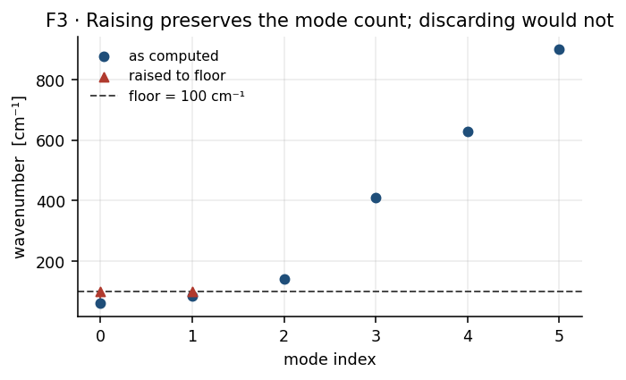
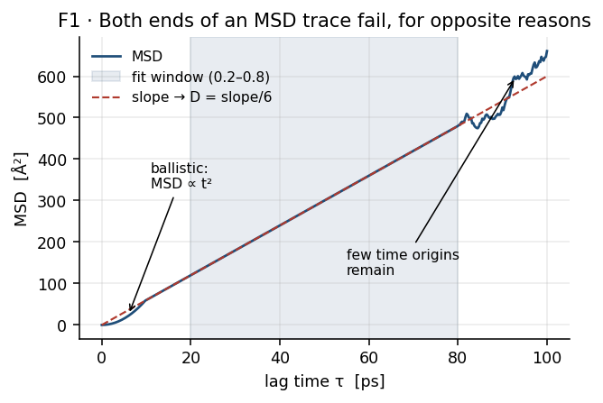
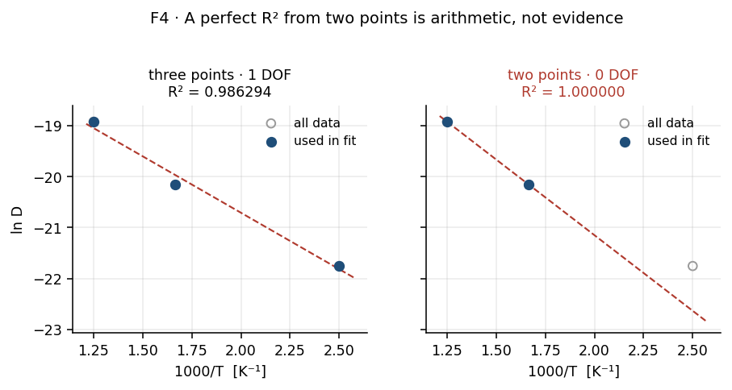

Part II — Theory¶
Every equation, definition and invariant the workflow relies on, in one place,
with units. The stage sections in 03-stages/ link here by
equation number instead of restating any of this.
[!NOTE] Scope. This part describes the method only. It contains no numbers from any real calculation; the figures and worked values come from the fictitious system in
figures/example/toy.py. Every numbered equation below is verified against the code byfigures/check_equations.py, which prints onePASS/FAILline per equation. Checked against ASE 3.26.0, MACE 0.3.8, NumPy 1.26.4, SciPy 1.13.1 on 2026-10-09. Re-check with:~/anaconda3/envs/mace_env/bin/python docs/figures/check_equations.py
Contents¶
1. Conventions¶
1.1 Symbols¶
Generic symbols are used throughout. A state is one of three stationary points on a reaction path:
symbol |
name |
meaning |
|---|---|---|
IS |
initial state |
the reactant minimum |
TS |
transition state |
the saddle separating IS from FS |
FS |
final state |
the product minimum |
An environment \(e\) is a class of interstitial site distinguished by its neighbour shell. Sites in the same environment are treated as equivalent and are averaged over; environments are kept distinct and summed over with weights. The distinction matters, and §7.2 is where it takes effect.
1.2 Units¶
Energies are in electronvolts, not joules or kJ/mol. Frequencies are wavenumbers in \(\mathrm{cm^{-1}}\) as produced by the vibration stage, not angular frequencies. Lengths are metres in all derived quantities, even though the structure files use ångström.
quantity |
symbol |
unit |
|---|---|---|
energy, barrier, enthalpy |
\(E\), \(E_a\), \(\Delta H\) |
\(\mathrm{eV}\) |
wavenumber |
\(\tilde\nu\) |
\(\mathrm{cm^{-1}}\) |
attempt frequency, rate |
\(\nu^*\), \(k\) |
\(\mathrm{s^{-1}}\) |
temperature |
\(T\) |
\(\mathrm{K}\) |
lattice parameter, thickness |
\(a_0\), \(L\) |
\(\mathrm{m}\) |
diffusivity |
\(D\) |
\(\mathrm{m^2\,s^{-1}}\) |
solubility |
\(S\) |
\(\mathrm{mol\,m^{-3}\,Pa^{-1/2}}\) |
permeability |
\(\Phi\) |
\(\mathrm{mol\,m^{-1}\,s^{-1}\,Pa^{-1/2}}\) |
flux |
\(J\) |
\(\mathrm{mol\,m^{-2}\,s^{-1}}\) |
pressure |
\(P\) |
\(\mathrm{Pa}\) |
[!IMPORTANT] The half-power of pressure in \(S\) and \(\Phi\) is not decorative. It is the signature of Sieverts’ law — diatomic gas dissolving as atoms — and it means those units are implicitly per \(\sqrt{1\ \mathrm{Pa}}\). A reference pressure that is not exactly \(1\ \mathrm{Pa}\) changes what the number means without changing the number. See §7.3.
1.3 Sign conventions¶
A barrier is always positive and always measured from the state it leaves:
A reaction energy is signed, negative for exothermic:
A solution enthalpy \(\Delta H_{\mathrm{sol}} > 0\) means dissolution is endothermic, so occupancy falls as temperature falls.

Figure 1. All three definitions on one profile. Look at where each arrow starts: the forward barrier is measured from IS, the reverse from FS, and the reaction energy spans the two minima. The dotted curve is the same path once zero-point energy is added — note that it shifts the two barriers by different amounts, which is why (T6a) and (T6b) reference different states. Fictitious profile.
[!IMPORTANT] Because \(E_{\mathrm{des}}\) is referenced to FS and \(E_a\) to IS, their zero-point corrections use different states. Getting this wrong leaves the reverse barrier with the forward barrier’s correction, which silently cancels in \(\Delta E\) and is therefore easy to miss. See §4.2 and equation (T6).
2. Constants¶
symbol |
value |
unit |
note |
|---|---|---|---|
\(k_B\) |
\(8.617333262\times10^{-5}\) |
\(\mathrm{eV\,K^{-1}}\) |
CODATA 2018 |
\(k_B\) |
\(1.380649\times10^{-23}\) |
\(\mathrm{J\,K^{-1}}\) |
SI form, for the gas terms |
\(h\) |
\(4.135667696\times10^{-15}\) |
\(\mathrm{eV\,s}\) |
|
\(c\) |
\(2.99792458\times10^{10}\) |
\(\mathrm{cm\,s^{-1}}\) |
converts \(\mathrm{cm^{-1}}\) to \(\mathrm{s^{-1}}\) |
\(N_A\) |
\(6.02214076\times10^{23}\) |
\(\mathrm{mol^{-1}}\) |
[!IMPORTANT] One Boltzmann constant, defined once per module, must be identical everywhere. It has not always been: two modules once carried a seven-digit truncation, which appeared as a \(\sim10^{-7}\) relative disagreement in \(D(T)\) between stages. Physically irrelevant, but it made cross-module agreement untestable at tight tolerance. Four checks now pin all definitions together.
2.1 Unit conversions¶
A wavenumber is an energy divided by \(hc\), so
Mean-squared displacement is reported in \(\mathrm{\mathring A^2}\) against time in \(\mathrm{ps}\), so a slope in \(\mathrm{\mathring A^2\,ps^{-1}}\) becomes SI by
3. Energetics¶
Binding of \(n\) adsorbed atoms, referenced to the clean surface and the gas-phase diatomic:
Barriers and reaction energies are (T1) and (T2). All three are electronic energies from the potential: no thermal or zero-point contribution yet.
The gas-phase chemical potential sets the pressure reference,
used only to convert between a chosen \(\mu\) and the pressure it corresponds to.
4. Vibrational analysis¶
4.1 What is computed¶
Each stationary point is characterised by a partial Hessian: only a chosen subset of atoms is displaced, the rest held fixed. This is Partial Hessian Vibrational Analysis (PHVA). It is an approximation made for cost, and it has a consequence that shapes everything downstream.
[!IMPORTANT] Freezing most of the lattice removes the modes that would otherwise carry away pseudo-translation and pseudo-rotation of the mobile fragment. Those motions reappear mixed into the lowest frequencies of the partial Hessian, so spurious low-frequency and imaginary modes are expected, not a sign of failure. §4.3 and §5.2 exist to keep them from contaminating the results.
A mode is real if its eigenvalue is positive and imaginary otherwise. Imaginary modes are reported as positive magnitudes. A proper minimum has no imaginary modes; a proper saddle has exactly one.
4.2 Zero-point energy¶
summed over real modes only. A barrier is corrected by the ZPE difference between its two endpoints — and the endpoints differ by direction:
(T6b) is the equation that is easy to get wrong. Using \(\mathrm{ZPE_{IS}}\) in the reverse direction makes the correction cancel exactly in \(E_a^{\mathrm{ZPE}} - E_{\mathrm{des}}^{\mathrm{ZPE}}\), leaving the reaction energy uncorrected while both barriers look corrected.
4.3 Quasi-harmonic treatment of low modes¶
Low frequencies are unreliable, and they enter the prefactor (T8) as a product, where a near-zero denominator mode is unbounded. Two treatments are possible: discard modes below a cutoff, or raise them to it. The workflow raises:
with \(\tilde\nu_{\mathrm{floor}} = 100\ \mathrm{cm^{-1}}\) by default. This is Truhlar’s quasi-harmonic treatment, standard in thermochemistry tooling.
Raising is preferred over discarding for two reasons. It leaves the mode counts unchanged, so the dimensional invariant (I1) remains meaningful without rebalancing. And it damps the artefact symmetrically, since the same floor applies to both states and the spurious factors largely cancel in the ratio.

Figure 2. What the floor does to a mode list. Look at the count: every mode below the floor is moved up to it, and none is removed, so the list is the same length before and after. Discarding would shorten it and break (I1). Fictitious frequencies.
[!IMPORTANT] Three thresholds with different meanings exist, and they once shared a name. They are not interchangeable:
threshold
default
action
quasi-harmonic floor
\(100\ \mathrm{cm^{-1}}\)
raise modes below it to it
ZPE inclusion
\(0\ \mathrm{cm^{-1}}\)
include every real mode
imaginary significance
\(50\ \mathrm{cm^{-1}}\)
ignore imaginary modes below it when judging state quality
partition-function cutoff
\(50\ \mathrm{cm^{-1}}\)
drop modes below it
4.4 Partition functions¶
Harmonic vibrational partition function, measured from the zero-point level:
Each factor exceeds unity, so \(q_{\mathrm{vib}} \ge 1\) always. The gas-phase diatomic reference \(q^{\mathrm{gas}}(T,P)\) combines translational, rotational and vibrational terms; its translational part carries a \(1/P\) factor, which is why the reference pressure propagates into §7.3.
5. Transition-state theory¶
5.1 Rate¶
Within harmonic TST a rate is an attempt frequency times a Boltzmann penalty:
The reverse rate uses the reverse barrier (T6b) and the reverse prefactor:
Reusing the forward \(\nu^*\) in the reverse direction is a second easy error: the two prefactors are built from different state pairs and are not equal.
5.2 Vineyard prefactor¶
with both products taken over the floored frequencies (T7), and the TS product excluding its single imaginary mode. The reverse prefactor is the same expression with FS in place of IS.
The factor \(c\) carries the units. The IS product has one more factor than the TS product, leaving one unpaired \(\mathrm{cm^{-1}}\) which \(c\) converts to \(\mathrm{s^{-1}}\). This is only dimensionally consistent if
which is invariant (I1) in §11. When it fails, the expression is not a frequency and no prefactor is returned.
[!IMPORTANT] (I1) fails whenever the two states were computed with different sets of displaced atoms, because each state’s mode count is three times its own displaced-atom count. A partial Hessian makes this easy to do by accident, and the resulting prefactor can be wrong by many orders of magnitude while remaining a finite, plausible-looking number. The fix is to displace the union of both states’ mobile atoms. Refusing to return a value is deliberate.
6. Gas-phase reference and the surface¶
The rate at which gas molecules strike unit area is Hertz–Knudsen:
with \(m\) the molecular mass. Dissociative sticking is treated as a dimensionless Boltzmann probability rather than a rate; multiplying by (T11) and a site area gives an adsorption rate.
Balancing adsorption against desorption gives the equilibrium surface coverage
The square root is the stoichiometry of a diatomic dissociating into two atoms — the same origin as the half-power in §1.2. The site area for a close-packed plane is \(A_{\mathrm{site}} = a_0^2/2\).
[!IMPORTANT] \(k_{\mathrm{des}}\) sits in the denominator, inside the square root. It is a desorption process leaving from FS, so by §5.1 it takes the reverse prefactor.
7. Solubility¶
7.1 Per-environment solution enthalpy¶
Solubility is an equilibrium property, so it depends on reaction energies along the dissolution path, not on barriers. The path is referenced to the first subsurface site: half a diatomic dissociates, then one atom moves from the surface into the first subsurface layer.
where \(\Delta H_{\mathrm{entry}}(e)\) is the entry-hop reaction energy, obtained from its ZPE-corrected barriers as \(E_a^{\mathrm{ZPE}} - E_{\mathrm{des}}^{\mathrm{ZPE}}\), averaged over the pathways belonging to environment \(e\).
[!IMPORTANT] Deeper hops are deliberately excluded from (T13). Motion beyond the first subsurface layer is bulk transport and is carried by \(D\) in §8. Including it here would count the same physics twice.
7.2 Collapsing environments¶
Environments are not collapsed to a representative. They are summed with population weights:
The exponential makes this sum strongly non-democratic: an environment several \(k_BT\) more favourable than the others dominates \(S\) even when its weight is small. A single environment reduces (T14) to plain Sieverts,
[!IMPORTANT] \(w_e\) is the fraction of computed pathways in environment \(e\), not a crystallographic site fraction. This is a deliberate approximation, and it means the sampling of pathways acts as an implicit weight on top of the Boltzmann factor. A site’s influence on \(S\) is a product of three things, only one of which is physics. See
02b-aggregation.md.
7.3 The two prefactor routes¶
\(S_0\) is the solubility at zero solution enthalpy — the ceiling if dissolution carried no thermodynamic penalty. Two independent constructions are reported.
Geometric. Pure site counting. For a face-centred cubic lattice with four octahedral sites per cubic cell,
Vibrational. A partition-function ratio, per dissolved atom:
The square root is again the diatomic stoichiometry. The two routes differ by orders of magnitude, because (T15) ignores the entropy of the gas reservoir entirely. They are reported side by side as a bracket, not averaged.
[!IMPORTANT] \(P_{\mathrm{ref}}\) must be \(1\ \mathrm{Pa}\). (T15) has no pressure term at all, while (T16) scales as \(\sqrt{P_{\mathrm{ref}}}\). Any other reference moves one route and not the other, silently putting them on different footings. The operating pressure of the membrane is a separate quantity and enters only in §9.
7.4 Saturation¶
(T14) is a dilute-limit expression and is unbounded in principle. Occupancy of a finite number of sites follows a Langmuir form,
and the dissolved concentration cannot exceed the site density \(\rho_{\mathrm{site}}\). Reported solubilities carry a saturating counterpart so the dilute result can be compared against that ceiling.
7.5 Rate-based cross-check¶
Solubility can also be reconstructed from rates alone, via (T12) and an entry/exit balance:
[!IMPORTANT] (T18) is a diagnostic, not a reported solubility. It averages rates over pathways, and averaging exponentials of differing barriers is not the same operation as (T14)’s weighted Boltzmann sum. Agreement between (T18) and (T14) is reassuring; disagreement indicates the averaging artefact, not a physical result. Quote (T14).
8. Diffusion¶
8.1 Mean-squared displacement¶
averaged over both time origins \(t\) and mobile atoms. Trajectories must be unwrapped through the periodic boundary first, or a crossing registers as a large spurious displacement.
8.2 Einstein relation¶
For three-dimensional isotropic diffusion in the long-time limit,
The factor is 6 in three dimensions (\(2d\) for dimension \(d\)). The slope is taken over an interior window of the trace, excluding both the early ballistic region and the late region where few time origins remain.
8.3 Is the slope meaningful?¶
(T20) holds only once motion is diffusive. The test used is to split the fit window in half and compare the two slopes:
A converged trace gives \(r \approx 1\). The accepted band is \(0.75 \le r \le 1.25\).

Figure 3. Why the slope is taken over an interior window. Look at the two ends: the early region curves upward because motion is still ballistic, and the late region wanders because few time origins remain. Only the shaded middle is a straight line whose slope means anything. Fictitious data.
[!IMPORTANT] A per-temperature \(R^2\) does not detect this. A visibly curved MSD can fit a straight line with \(R^2 > 0.99\). Judge convergence by (T21), never by \(R^2\).
[!NOTE] Planned: the band in (T21) is a chosen tolerance, not a derived one, and no source for it is recorded. It decides which points are trustworthy, so it deserves either a justification or exposure as a setting.
8.4 Temperature dependence¶
fitted as a straight line in \(\ln D\) against \(1/T\):
optionally weighted by inverse variance, \(w_i = (D_i/\sigma_{D_i})^2\).
[!IMPORTANT] (T22a) has \(n-2\) degrees of freedom for \(n\) temperatures. With two temperatures it has none, and the fit reproduces them exactly: \(R^2 = 1\) is then arithmetic, not evidence. A series that loses points to a non-positive \(D\) can silently reach this state.

Figure 4. The same statistic meaning two different things. Compare the two \(R^2\) values: three points leave one degree of freedom and the residuals show, while two points leave none and fit perfectly by construction — note how far the discarded point lies from that line. Fictitious data.
8.5 Concentration¶
Hydrogen content is reported in atomic percent,
\(D\) depends on \(n\); \(S\) does not, because (T13) is built from energetics of isolated states. Consequently every loading dependence of \(\Phi\) enters through \(D\) alone.
[!IMPORTANT] A single mobile atom is a single random walker: (T19) then has no ensemble average, only a time average, and the variance of \(D\) is large. This is a property of the loading, not of the material.
9. Permeability¶
9.1 Definition¶
Steady-state permeability is the product of the two transport properties:
9.2 Arrhenius form¶
Substituting (T22) and (T14a) into (T24) and collecting terms gives a result that needs no separate fit:
The permeation activation energy is the diffusion barrier plus the solution enthalpy. A direct regression of \(\ln\Phi\) against \(1/T\) is computed as a cross-check on (T25), not as the primary route.
[!IMPORTANT] \(D(T)\) in (T24) is evaluated from the fitted parameters (T22), not re-measured at the permeation temperatures. The permeation temperature grid and the molecular-dynamics temperature grid are independent, and the former may interpolate or extrapolate the latter. Any change to which points enter the fit (T22a) therefore moves \(\Phi\) at every temperature.
9.3 Flux¶
For a membrane of thickness \(L\) with a diatomic feed, the driving force is a difference of square roots, not of pressures:
The ordinary Fickian form is also available for comparison, in terms of concentrations rather than pressures:
9.4 Validity¶
(T24)–(T26) assume dilute dissolved hydrogen: non-interacting atoms on independent sites, occupancy far below saturation. Two conditions must be checked rather than assumed — that the loading is dilute, and that \(S\) is below the ceiling of §7.4.
[!IMPORTANT] There is a tension between this and §8.5, and it cannot be resolved by choosing a loading. The dilute limit is a single mobile atom, which is exactly the case whose mean-squared displacement is least converged. No loading is simultaneously dilute and well sampled; the honest course is to state which compromise a given number represents.
10. Uncertainty¶
10.1 Representation¶
How an uncertainty should be written depends on how the quantity combines.
quantity |
combines by |
represent as |
reason |
|---|---|---|---|
energies: \(E_a\), \(\Delta H\), \(E_D\), \(E_\Phi\) |
addition (in an exponent) |
absolute \(\sigma\), in eV |
absolute errors add in quadrature; symmetric; cannot cross a forbidden bound |
prefactors: \(D_0\), \(S_0\), \(\Phi_0\) |
multiplication |
fractional \(\sigma/x\), or a \(\times/\div\) factor |
fractional errors add in quadrature; an absolute \(\pm\) can go negative |
[!IMPORTANT] A prefactor is fitted in log space, \(D_0 = \exp(\text{intercept})\), and spans orders of magnitude. Reporting it as \(x \pm \sigma\) can put the lower bound below zero — a negative diffusivity prefactor. The honest statement is geometric: \(\sigma/x\) as a fraction, equivalently a \(\times/\div\) band \([x/f,\ x f]\) with \(f = \exp(\sigma/x)\).
Applying (T28) to (T25):
10.2 Averages over pathways¶
Where a quantity is a mean over \(n\) pathways, the uncertainty reported is the standard error of that mean:
[!IMPORTANT] (T30) is undefined for \(n = 1\) and is recorded as \(0\). Zero here means unmeasurable, not precise. It propagates into (T13) as a zero contribution, which can make a composite enthalpy look better determined than it is.
10.3 What is not an uncertainty¶
\(R^2\) is a goodness-of-fit statistic. It is not an error bar, and for a quantity like (T14) — a sum of exponentials — curvature is physical, so \(R^2 < 1\) is expected rather than indicative of error. See also §8.3 and §8.4.
11. Invariants¶
Properties that must hold. Each is checked.
# |
invariant |
consequence if violated |
|---|---|---|
I1 |
\(n_{\mathrm{IS}} = n_{\mathrm{TS}} + 1\) for a Vineyard prefactor |
(T8) is not a frequency; no prefactor is returned |
I2 |
a minimum has no significant imaginary mode |
the state is not a minimum; its ZPE and prefactor are meaningless |
I3 |
a saddle has exactly one significant imaginary mode |
the barrier does not describe a single process |
I4 |
\(q_{\mathrm{vib}} \ge 1\) |
a factor in (T9) was built from a non-real mode |
I5 |
\(\sum_e w_e = 1\) |
(T14) is not a weighted average |
I6 |
every \(\sum_e w_e e^{-\Delta H/k_BT} \le 1\) when all \(\Delta H > 0\) |
\(S\) exceeds its own zero-enthalpy ceiling \(S_0\) |
I7 |
one \(k_B\) across all modules |
stages disagree on the same equation |
I8 |
\(P_{\mathrm{ref}} = 1\ \mathrm{Pa}\) |
(T15) and (T16) are on different references |
I9 |
\(n \ge 3\) points for an Arrhenius fit |
zero degrees of freedom; \(R^2 = 1\) is arithmetic |
12. Equation index¶
Each equation, the function implementing it, and the check that verifies it.
eq |
quantity |
implemented in |
checked as |
|---|---|---|---|
T1 |
barriers |
— (definition) |
|
T2 |
reaction energy |
— (definition) |
|
T3 |
\(\mathrm{cm^{-1}}\to\mathrm{eV}\) |
|
|
T4 |
\(\mathrm{\mathring A^2/ps}\to\mathrm{m^2/s}\) |
|
|
T5 |
binding energy |
— |
|
T6a |
forward ZPE |
|
|
T6b |
reverse ZPE, from FS |
|
|
T7 |
quasi-harmonic floor |
|
|
T8 |
Vineyard prefactor |
|
|
T9 |
\(q_{\mathrm{vib}}\) |
|
|
T10 |
TST rate |
|
|
T11–T12 |
strike rate, coverage |
via T18 |
|
T13 |
\(\Delta H_{\mathrm{sol}}(e)\) |
|
|
T14 |
environment sum |
|
|
T14a |
Sieverts limit |
|
|
T15 |
\(S_0^{\mathrm{geo}}\) |
|
|
T16 |
\(S_0^{\mathrm{vib}}\) |
via T9 |
|
T17 |
Langmuir |
— |
|
T18 |
rate-based \(S\) |
— (diagnostic) |
|
T19 |
MSD |
— |
|
T20 |
Einstein |
|
|
T21 |
convergence ratio |
— |
|
T22 |
\(D(T)\) |
two modules, reversed arguments |
|
T22a |
Arrhenius fit |
|
|
T23 |
atomic percent |
— |
|
T24 |
\(\Phi = DS\) |
|
|
T25 |
\(\Phi_0\), \(E_\Phi\) |
|
|
T26 |
Richardson flux |
|
|
T27 |
Fick flux |
— |
|
T28–T30 |
error propagation |
|
[!IMPORTANT] (T22) exists in two modules with reversed argument order: one takes \((D_0, E_D, T)\), the other \((T, E_a, D_0)\). Calling either the wrong way round does not raise — it underflows to exactly
0.0, a silent and plausible result. Both orders are pinned by checks.